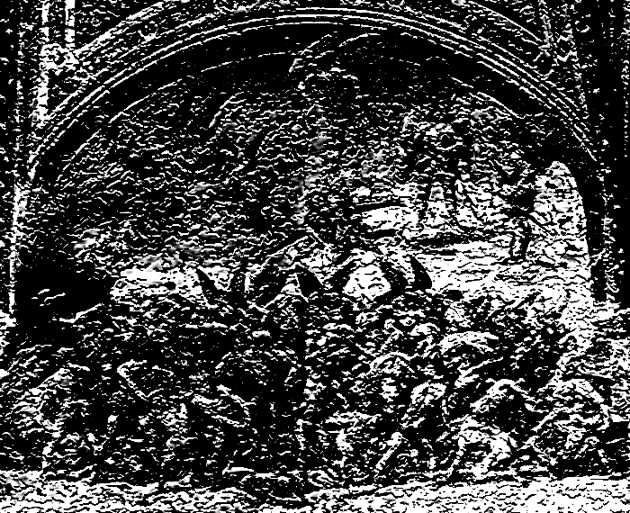

Kirill Sommer
home
work
texts
about
About Eternity

And you will be damned for eternity.
This sentence resonated with me not so long ago.
I never actually questioned myself about eternity,
after all, it represent the never-ending, there isn't much to say about it.
One will say that it is impossible to image neither to represent eternity.
But let's just try to understand it.
First, where does eternity starts?
Is it the beginning of an something? Is it the cause of something?
Does eternity have an hypothetical end? Or does it loop?
Or rather is it a the following of linear time?
Lots of question that we can already try to investigate.
I. Is it the beginning of an something? Is it the cause of something?
In this sentence we can start by describing the word "something"
What can "something" be?
An action? A concept? An object?
My limited intelect could not find more causes for something, however these definitions of the "something"
rely on two disctinct categories:
1. The real
2. The imaginary
And these two categories rely on one fundamental: time.
Eternity is determined by time, no matter its form; linear or meta-physical (see Henri Bergon's Matter and Memory concept of time)
Can eternity exist after the imagination of someone has died? Physically or hypothetically.
The answer is no, eternity because of its theoretical concept ceases to exist at the moment
someone stops to think about it. There is actually no so called "eternity" as long as it is not tought about.
If we think of time as a non-linear progression, ever destructing and ever regenarating from itself, we can
also define eternity as a simple re-iteration of the "previous".
We can also discuss about the concept of the beginning, which directly includes the questioning of the end
of eternity.
The beginning of eternity, if we are applying what we discussed before is nothing more than the tought of eternity.
But is the beginning of eternity in synchronisation with the beginning of the thought of eternity?
Not necessarily. In the context of Meta-physical time, because of the constant and infinite re-iteration of time and therfore of eternity,
we can say that there is no real correlation between the beginning of the thought of eternity and the the beginning of eternity itself.
Eternity, once thought, depends solely on our thinking and nothing else.
We must make a clear distinction between the existance and the process of work of eternity itself.
We can declare now, eternity is a process, which exists only by our thoughts, does not stop its process when it ceases to exist, therefore we stop thinking about it.
We can also talk about the cause.
What pushed eternity to be caused?
To this, there is no simple answer. Rather an almost infinite amount of answers.
This can be for example the fear of eternity that causes the ingition of the concept of eternity.
II. Does eternity have an hypothetical end? Or does it loop? Or rather is it a the following of linear time?
The nature of the word eternity comes from another concept which is the infinite, these concepts are similar but a
distinction needs to be made:
Eternity is the imaginary concept of something physical (does not have to be matter).
The infinite, on the other hand is the imaginary concept of something imaginary.
By its simple nature eternity cannot have an end. But we can still define as said above the end of existence of eternity.
Which in out simple minds corresponds to the end of eternity, but is actually very different.
Does it loop?
Indeed, how can we tell if eternity has no beginning nor end if it is not a loop?
What if damnation for example isn't the just the loop of an action?
But argumenting about it is not really useful as to be able to discuss about this we have to assume
in the context of eternity being a loop.
The following of linear time?
In the context of linear time, eternity is exactly like a progression, we can also mention
that it has a trajectory, a orientation, a position ,and a destiny.
First two can only be defined when it comes to the the cause of eternity, it's destiny is quiet sad
to described as we have to image a point that is constantly distances itself from the current postion of
destiny. It's position is simply the time state when someone starts to think about the eternity in a context.
Here is just a glimps on eternity, I believe that there is so much more to say about this but it's 3:33 am and
i did a lot of meth and for the past 72 hours, my high starts to fade and I feel goofy and sleepy.
I think that i will throw in my toilets and go to sleep.